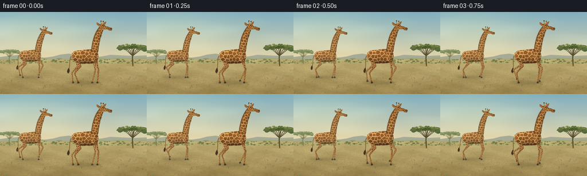
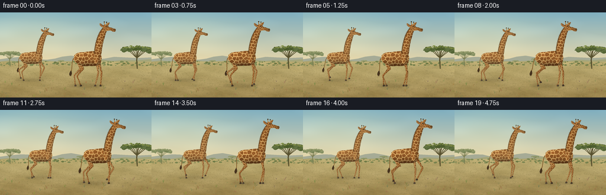

CODING AGENTS AS PIXEL WORLD MODELS
traex/GPT-6.1-Sol · instance_preservation_0011
点击播放 · 原生 RGB 像素
逐轮保存的候选
回放视频、检查图与代码变化。
每份候选均可单独播放。实际图片检查记录在下方工具轨迹中。
候选 01播放与检查图
点击播放 · 原生 RGB 像素


展开代码变化
--- 上一保存版本
+++ 本次保存版本
@@ -0,0 +1,352 @@
+from pathlib import Path
+import math
+import json
+import numpy as np
+from PIL import Image, ImageDraw, ImageFilter
+from scipy.spatial import Voronoi
+from scipy.ndimage import gaussian_filter, distance_transform_edt
+import artifact_io
+
+ROOT = Path(__file__).resolve().parent
+SPEC = json.loads((ROOT/'task_spec.json').read_text())
+W,H,S = SPEC['width'],SPEC['height'],4
+rng = np.random.default_rng(8192)
+
+def bezier_path(commands):
+ pts=[]; cur=None; start=None
+ for op, vals in commands:
+ if op=='M': cur=np.array(vals,dtype=float); start=cur.copy(); pts.append(tuple(cur))
+ elif op=='L': cur=np.array(vals,dtype=float); pts.append(tuple(cur))
+ elif op=='C':
+ a,b,c=np.array(vals,dtype=float).reshape(3,2); p=cur.copy()
+ for t in np.linspace(0,1,18)[1:]:
+ q=(1-t)**3*p+3*(1-t)**2*t*a+3*(1-t)*t*t*b+t**3*c
+ pts.append(tuple(q))
+ cur=c
+ elif op=='Q':
+ a,b=np.array(vals,dtype=float).reshape(2,2); p=cur.copy()
+ for t in np.linspace(0,1,14)[1:]: pts.append(tuple((1-t)**2*p+2*t*(1-t)*a+t*t*b))
+ cur=b
+ elif op=='Z': pts.append(tuple(start)); cur=start
+ return pts
+
+def path(*cmd): return bezier_path(cmd)
+def sc(points): return [(round(x*S),round(y*S)) for x,y in points]
+
+def curved_poly(poly):
+ # A slight corner rounding gives the irregular skin islands soft edges.
+ p=np.asarray(poly)
+ out=[]
+ for a,b in zip(p,np.roll(p,-1,axis=0)):
+ out.extend([a*.91+b*.09,a*.09+b*.91])
+ return np.asarray(out)
+
+class Part:
+ def __init__(self, poly, seed=0, spacing=6, mode='round', tone=1., solid=None):
+ self.poly=poly
+ p=np.asarray(poly)
+ x0,y0=np.floor(p.min(0)-2).astype(int); x1,y1=np.ceil(p.max(0)+2).astype(int)
+ self.x0,self.y0=x0,y0
+ ww,hh=(x1-x0)*S,(y1-y0)*S
+ mask=Image.new('L',(ww,hh)); d=ImageDraw.Draw(mask)
+ d.polygon([((x-x0)*S,(y-y0)*S) for x,y in poly],fill=255)
+ random=np.random.default_rng(seed)
+ base=np.zeros((hh,ww,3),dtype=float); base[:]=[219,176,108] if solid is None else solid
+ tex=Image.new('RGB',(ww,hh), tuple(base[0,0].astype(int)))
+ td=ImageDraw.Draw(tex)
+ if solid is None:
+ points=[]
+ for j,y in enumerate(np.arange(y0-spacing*3,y1+spacing*3,spacing*.9)):
+ for x in np.arange(x0-spacing*3,x1+spacing*3,spacing):
+ points.append([x+(j%2)*spacing*.5+random.uniform(-.30,.30)*spacing,y+random.uniform(-.29,.29)*spacing])
+ points=np.asarray(points); v=Voronoi(points)
+ for i,p in enumerate(points):
+ region=v.regions[v.point_region[i]]
+ if not region or -1 in region:continue
+ verts=v.vertices[region]
+ if verts[:,0].max()<x0 or verts[:,0].min()>x1 or verts[:,1].max()<y0 or verts[:,1].min()>y1:continue
+ ctr=verts.mean(0)
+ verts=ctr+(verts-ctr)*random.uniform(.77,.86)
+ verts=curved_poly(verts)
+ variation=random.uniform(-11,12)
+ col=np.array([143,88,40])+variation*np.array([1,.73,.4])
+ td.polygon([((x-x0)*S,(y-y0)*S) for x,y in verts],fill=tuple(col.astype(int)))
+ rgb=np.asarray(tex,dtype=float)
+ yy,xx=np.mgrid[:hh,:ww].astype(float); xx=xx/S+x0; yy=yy/S+y0
+ ma=np.asarray(mask)>0
+ if mode=='body':
+ nx=(xx+1)/27*.60; ny=(yy+.5)/13.2
+ nz=np.sqrt(np.maximum(0,1-nx*nx-ny*ny))
+ light=np.maximum(0,-.27*nx-.57*ny+.70*nz)
+ illum=.68+.44*light
+ illum-=.1*np.maximum(0,(yy-4)/10)
+ else:
+ # Cross-sectional shading of long neck, limbs and muzzle.
+ mids=np.zeros(hh); radii=np.ones(hh)
+ for row in range(hh):
+ pixels=np.where(ma[row])[0]
+ if len(pixels):
+ mids[row]=(pixels[0]+pixels[-1])/2/S+x0
+ radii[row]=max(.6,(pixels[-1]-pixels[0])/2/S)
+ elif row: mids[row]=mids[row-1];radii[row]=radii[row-1]
+ nx=np.clip((xx-mids[:,None])/radii[:,None],-1,1)
+ nz=np.sqrt(np.maximum(0,1-nx*nx))
+ light=np.maximum(0,-.32*nx+.78*nz)
+ illum=.72+.36*light
+ if mode=='head': illum+=.045*np.cos((yy-y0)/(y1-y0)*math.pi)
+ grain=random.normal(0,1.6,(hh,ww))
+ grain+=gaussian_filter(random.normal(0,1,(hh,ww)),1.2)*3.0
+ rgb=rgb*illum[:,:,None]*tone+grain[:,:,None]
+ # A very thin soft edge is fur, rather than a drawn cartoon outline.
+ dist=distance_transform_edt(ma)/S
+ rgb*= (1-.055*np.exp(-dist/.5))[:,:,None]
+ rgba=np.dstack((np.clip(rgb,0,255).astype(np.uint8),np.asarray(mask)))
+ self.image=Image.fromarray(rgba,'RGBA')
+ def paste(self, canvas, cx,cy,scale=1,angle=0,origin=(0,0),at=None,far=False):
+ c,s=math.cos(angle),math.sin(angle)
+ if at is None:at=origin
+ # local coordinates rotate around origin, whose destination is at.
+ ox,oy=origin; ax,ay=at
+ a=c/scale; b=s/scale; d=-s/scale;e=c/scale
+ C=S*(ox-self.x0-c*ax-s*ay)-a*cx*S-b*cy*S
+ F=S*(oy-self.y0+s*ax-c*ay)-d*cx*S-e*cy*S
+ # ax,ay are giraffe units and therefore need separate inverse scaling.
+ # world = center + scale*(at + R*(local-origin)).
+ C=S*(ox-self.x0-c*ax-s*ay)-(c*cx+s*cy)*S/scale
+ F=S*(oy-self.y0+s*ax-c*ay)-(-s*cx+c*cy)*S/scale
+ warped=self.image.transform(canvas.size,Image.Transform.AFFINE,(a,b,C,d,e,F),resample=Image.Resampling.BICUBIC)
+ if far:
+ arr=np.asarray(warped).copy()
+ arr[:,:,:3]=(arr[:,:,:3].astype(float)*.88+np.array([210,191,142])*.12).astype(np.uint8)
+ warped=Image.fromarray(arr)
+ canvas.alpha_composite(warped)
+
+body_poly=path(('M',(-24,-3)),('C',(-24,-10,-16,-12,-8,-12)),('C',(0,-13,10,-15,16,-12)),('C',(23,-10,24,-2,21,6)),('C',(18,11,11,12,1,11)),('C',(-7,13,-15,10,-20,6)),('C',(-24,3,-25,1,-24,-3)),('Z',()))
+neck_poly=path(('M',(8,1)),('C',(11,-8,11,-23,16,-37)),('C',(19,-45,23,-51,26,-54)),('C',(28,-56,31,-55,33,-52)),('C',(29,-44,28,-38,25,-28)),('C',(23,-18,23,-9,20,-3)),('C',(20,5,15,8,11,7)),('Z',()))
+head_poly=path(('M',(25,-53)),('C',(24,-56,26,-59,29,-59)),('C',(32,-59,34,-55,36,-54)),('C',(40,-54,41,-52,44,-52)),('C',(47,-52,47,-48,45,-47)),('C',(42,-46,40,-48,37,-49)),('C',(34,-49,31,-47,28,-49)),('C',(26,-50,25,-51,25,-53)),('Z',()))
+body=Part(body_poly,51,6.4,'body')
+neck=Part(neck_poly,142,5.0,'neck')
+head=Part(head_poly,88,3.2,'head')
+ear1=Part(path(('M',(27,-55)),('C',(24,-59,20,-62,19,-60)),('C',(19,-57,22,-54,26,-54)),('Z',())),12,3.2,'neck')
+ear2=Part(path(('M',(31,-57)),('C',(31,-61,34,-63,36,-62)),('C',(35,-59,34,-57,32,-56)),('Z',())),21,3.2,'neck')
+# Bones taper, with subtly enlarged carpal/fetlock joints.
+def segment(length,r0,r1,seed,spacing=3.2,tone=1):
+ return Part(path(('M',(-r0,0)),('C',(-r0*.96,length*.25,-r1*.82,length*.62,-r1,length-1)),('Q',(-r1*1.14,length+1,0,length+1.1)),('Q',(r1*1.1,length+1,r1,length-1)),('C',(r1*.80,length*.62,r0*.95,length*.25,r0,0)),('Q',(0,-r0,-r0,0)),('Z',())),seed,spacing,'neck',tone)
+foreup=segment(23.6,3.0,1.4,228,3.8)
+forelow=segment(22.2,1.45,.8,229,2.9)
+hindup=segment(17.8,4.0,2.05,230,4.1)
+hindmid=segment(16,2.05,1.05,231,3.1)
+hindlow=segment(17.5,1.05,.78,232,2.6)
+hoof=Part(path(('M',(-.9,-1.6)),('L',(1.1,-1.7)),('L',(2.05,.3)),('Q',(1.9,1.4,-1.5,1.0)),('L',(-1.6,.2)),('Z',())),4,mode='neck',solid=(68,55,41))
+
+# Landscape, drawn once. Atmospheric texture stays still across the sequence.
+def landscape():
+ rr=np.random.default_rng(1023)
+ yy,xx=np.mgrid[:H*S,:W*S].astype(float); yy/=S;xx/=S
+ t=np.clip(yy/90,0,1)
+ sky=np.array([127,174,191])[None,None,:]*(1-t[:,:,None])+np.array([236,216,168])[None,None,:]*t[:,:,None]
+ glow=np.exp(-((xx-47)/96)**2-((yy-29)/50)**2)
+ sky+=glow[:,:,None]*np.array([20,14,3])
+ clouds=gaussian_filter(rr.normal(0,1,(H*S,W*S)),(7*S,21*S))
+ sky+=np.maximum(0,clouds-.001)[:,:,None]*520
+ base=Image.fromarray(np.clip(sky,0,255).astype(np.uint8)).convert('RGBA')
+ d=ImageDraw.Draw(base)
+ hills=[(0,81),(0,79),(15,77),(35,75),(48,75.4),(62,79),(79,80),(93,78),(105,74.7),(120,73),(137,76),(155,80),(177,78),(193,75),(211,76),(233,77),(256,76),(256,92),(0,92)]
+ d.polygon(sc(hills),fill=(166,171,150,255))
+ hills2=[(0,83),(15,81),(30,83),(56,79),(74,81),(96,83),(119,82),(148,79),(169,79.5),(192,82),(209,80),(230,81),(256,79),(256,96),(0,96)]
+ d.polygon(sc(hills2),fill=(165,165,121,255))
+ # Ground has multiscale mottled earth and sunbleached grasses.
+ tn=np.clip((yy-84)/(H-84),0,1)
+ ground=np.array([190,174,116])[None,None,:]*(1-tn[:,:,None])+np.array([155,132,78])[None,None,:]*tn[:,:,None]
+ n1=gaussian_filter(rr.normal(0,1,yy.shape),(.8*S,2.5*S))
+ n2=gaussian_filter(rr.normal(0,1,yy.shape),(3*S,9*S))
+ n3=rr.normal(0,1,yy.shape)
+ ground+=(n1*42+n2*110+n3*1.6)[:,:,None]*np.array([1,.85,.60])
+ ground+=(5*np.sin(xx/18+yy/8)+3*np.cos(xx/11-yy/3))[:,:,None]
+ a=np.clip((yy-83)*S,0,1)
+ arr=np.asarray(base).copy(); arr[:,:,:3]=(arr[:,:,:3]*(1-a[:,:,None])+np.clip(ground,0,255)*a[:,:,None]).astype(np.uint8)
+ base=Image.fromarray(arr);d=ImageDraw.Draw(base)
+ # Fine dark scrub along the far plain.
+ for i in range(150):
+ x=rr.uniform(-3,W+3);y=rr.uniform(83,90);r=rr.uniform(.25,1.3)
+ col=tuple(np.array([120,130,78])+rr.integers(-10,15))+ (255,)
+ d.ellipse((int((x-r*2)*S),int((y-r)*S),int((x+r*2)*S),int((y+r)*S)),fill=col)
+ def acacia(x,y,height,width,seed,muted=False):
+ tr=np.random.default_rng(seed)
+ trunk=(88,81,47,255) if not muted else (122,125,83,255)
+ top=y-height
+ d.line(sc([(x,y),(x-1,y-height*.40),(x+1,top+height*.19)]),fill=trunk,width=max(1,round(height*.055*S)))
+ for end in np.linspace(-.42,.42,8):
+ start=(x-1,y-height*.48);mid=(x+end*width*.55,top+height*.24);dest=(x+end*width,top+height*.10)
+ d.line(sc([start,mid,dest]),fill=trunk,width=max(1,round(height*.025*S)))
+ for k in range(110):
+ u=tr.uniform(-1,1)
+ px=x+u*width*.51;py=top+height*.08+abs(u)**2*height*.07+tr.normal(0,height*.04)
+ rx=tr.uniform(width*.025,width*.09);ry=tr.uniform(height*.025,height*.075)
+ color=np.array([87,103,56]) if not muted else np.array([129,140,95])
+ color+=tr.integers(-13,17)
+ d.ellipse(((px-rx)*S,(py-ry)*S,(px+rx)*S,(py+ry)*S),fill=tuple(color)+(255,))
+ for k in range(60):
+ u=tr.uniform(-.95,.95);px=x+u*width*.50;py=top+abs(u)**2*height*.09+tr.normal(0,height*.025)
+ r=tr.uniform(.2,1.1)
+ col=(124+int(tr.integers(0,13)),135+int(tr.integers(0,13)),69,255) if not muted else (148,155,107,255)
+ d.ellipse(((px-r*1.7)*S,(py-r*.4)*S,(px+r*1.7)*S,(py+r*.4)*S),fill=col)
+ acacia(232,95,37,51,33)
+ acacia(17,91,24,32,42,True)
+ acacia(136,85.2,7,12,96,True)
+ acacia(103,87,5.3,9,97,True)
+ # Dry grass at varied depth, sparse and tiny at the horizon.
+ for k in range(3400):
+ y=rr.uniform(87,H+4);x=rr.uniform(-3,W+3)
+ depth=((y-85)/(H-85))
+ height=rr.uniform(.5,2.3)*(depth*.92+.10)
+ shade=rr.uniform(-18,24)
+ col=tuple(np.clip(np.array([146,131,77])+shade*np.array([1,1,.7]),0,255).astype(int))+(255,)
+ lean=rr.uniform(-.8,.8)*height
+ d.line(sc([(x,y),(x+lean*.35,y-height*.65),(x+lean,y-height)]),fill=col,width=max(1,round(depth*.27*S)))
+ if k%7==0:
+ d.line(sc([(x,y),(x-lean*.8-.3,y-height*.78)]),fill=col,width=1)
+ # Thin straw heads and patchy low tussocks in the foreground.
+ for k in range(90):
+ x=rr.uniform(-5,W+5);y=rr.uniform(116,H+7);h=rr.uniform(1.8,6.1)
+ col=tuple(rr.integers([115,104,57],[169,150,90]))+(255,)
+ for j in range(rr.integers(3,7)):
+ dx=rr.uniform(-2,2)
+ d.line(sc([(x,y),(x+dx*.5,y-h*.52),(x+dx,y-h*rr.uniform(.5,1))]),fill=col,width=1)
+ return base
+
+BACKGROUND=landscape()
+
+def line_path(draw, points, cx,cy,size,color,width):
+ draw.line([((cx+x*size)*S,(cy+y*size)*S) for x,y in points],fill=color,width=max(1,round(width*size*S)),joint='curve')
+
+def transformed(points,origin,angle,at):
+ c,s=math.cos(angle),math.sin(angle)
+ return [(at[0]+c*(x-origin[0])-s*(y-origin[1]),at[1]+s*(x-origin[0])+c*(y-origin[1])) for x,y in points]
+
+def gait(t,offset):
+ phase=(t/2.30+offset)%1
+ stance=.66
+ if phase<stance:
+ dx=4.55-9.10*phase/stance; lift=0
+ else:
+ u=(phase-stance)/(1-stance)
+ smooth=u*u*(3-2*u)
+ dx=-4.55+9.1*smooth
+ lift=6.2*math.sin(math.pi*u)**1.3
+ return dx,lift,phase
+
+def bone(canvas,part,a,b,cx,cy,size,far=False):
+ angle=math.atan2(-(b[0]-a[0]),b[1]-a[1])
+ part.paste(canvas,cx,cy,size,angle,origin=(0,0),at=a,far=far)
+
+def solve_knee(a,b,l1,l2,direction):
+ a=np.array(a,float);b=np.array(b,float);v=b-a;dist=np.linalg.norm(v)
+ dist=min(dist,l1+l2-.01)
+ u=v/np.linalg.norm(v)
+ along=(l1*l1-l2*l2+dist*dist)/(2*dist)
+ h=math.sqrt(max(.0,l1*l1-along*along))
+ return a+along*u+direction*h*np.array([u[1],-u[0]])
+
+def giraffe(canvas,cx,cy,size,t,seed,far=False):
+ phase0=seed*.13
+ bounce=.32*math.cos(4*math.pi*(t/2.30+phase0))
+ cy+=bounce*size
+ ground=45-bounce
+ # All four legs have a distinct phase, but each foot is planted during stance.
+ legs=[]
+ for isfront,near,offset in [(False,False,.5),(True,False,.62),(False,True,0),(True,True,.12)]:
+ dx,lift,phase=gait(t,phase0+offset)
+ shift=-1.3 if not near else 1.0
+ foot=np.array([(17 if isfront else -18)+dx+shift,ground-lift])
+ if isfront:
+ anchor=np.array([15.4+shift,-.2]);knee=solve_knee(anchor,foot,23.6,22.2,1)
+ joints=[anchor,knee,foot];parts=[foreup,forelow]
+ else:
+ anchor=np.array([-17.0+shift,-.1])
+ knee=np.array([-10.8+shift+dx*.16,15.8-lift*.28])
+ hock=solve_knee(knee,foot,16,17.5,-1)
+ joints=[anchor,knee,hock,foot];parts=[hindup,hindmid,hindlow]
+ legs.append((near,joints,parts,foot,lift))
+ # Animated contact and cast shadows are soft in the dry grass.
+ sh=Image.new('RGBA',canvas.size);sd=ImageDraw.Draw(sh)
+ gy=cy+ground*size
+ sd.ellipse(((cx-33*size)*S,(gy-3*size)*S,(cx+26*size)*S,(gy+2.9*size)*S),fill=(64,55,34,35))
+ for near,joints,parts,foot,lift in legs:
+ px=cx+foot[0]*size
+ sd.ellipse(((px-3.3*size)*S,(gy-1.0*size)*S,(px+3.3*size)*S,(gy+.7*size)*S),fill=(60,46,24,int(59*(1-lift/9))))
+ canvas.alpha_composite(sh.filter(ImageFilter.GaussianBlur(1.3*S)))
+ # Tail bends and the tuft swings in a small arc.
+ swing=math.sin(t*2.15+seed)*2.3
+ tail=path(('M',(-23,-3)),('C',(-29,1,-26+ swing*.7,13,-29+swing,21)))
+ d=ImageDraw.Draw(canvas)
+ line_path(d,tail,cx,cy,size,(135,99,50,255),1.25)
+ tuft=path(('M',(-29+swing,19)),('C',(-32+swing,23,-33+swing,27,-30+swing,28)),('C',(-27+swing,26,-27+swing,23,-29+swing,19)),('Z',()))
+ d.polygon([((cx+x*size)*S,(cy+y*size)*S) for x,y in tuft],fill=(61,45,28,255))
+ for k in range(7):
+ line_path(d,[(-29+swing+(k-3)*.28,22),(-30+swing+(k-3)*.5,28+(k%3)*.5)],cx,cy,size,(77,55,30,255),.18)
+ for near,joints,parts,foot,lift in legs:
+ if near: continue
+ for j,part in enumerate(parts):bone(canvas,part,joints[j],joints[j+1],cx,cy,size,True)
+ hoof.paste(canvas,cx,cy,size,0,at=tuple(foot),far=True)
+ for near,joints,parts,foot,lift in legs:
+ if not near:continue
+ for j,part in enumerate(parts):bone(canvas,part,joints[j],joints[j+1],cx,cy,size,far)
+ hoof.paste(canvas,cx,cy,size,0,at=tuple(foot),far=far)
+ body.paste(canvas,cx,cy,size,far=far)
+ # The little neck nod is articulated, never changing giraffe identity.
+ nod=.014*math.sin(2*math.pi*(t/2.3+phase0)+.3)
+ origin=(15,-7)
+ neck.paste(canvas,cx,cy,size,nod,origin=origin,at=origin,far=far)
+ def ntrans(p):return transformed(p,origin,nod,origin)
+ d=ImageDraw.Draw(canvas)
+ mane=path(('M',(25.5,-54)),('C',(21,-49,17,-42,14.4,-33)),('C',(12,-25,10.9,-17,10.1,-10)))
+ mane=ntrans(mane)
+ line_path(d,mane,cx,cy,size,(101,66,30,255),1.0)
+ for k in range(43):
+ j=int(k/(43-1)*(len(mane)-1));x,y=mane[j]
+ ln=.8+.55*math.sin(k*4.3)**2
+ line_path(d,[(x,y),(x-ln,y-.40)],cx,cy,size,(93,62,31,255),.25)
+ # Back ear, capped ossicones, near ear, then the head profile.
+ ear2.paste(canvas,cx,cy,size,nod,origin=origin,at=origin,far=far)
+ hornpoints=[[(27.2,-57.5),(27.0,-63.0)],[(31.0,-57.2),(30.9,-62.4)]]
+ d=ImageDraw.Draw(canvas)
+ for horn in hornpoints:
+ hp=ntrans(horn);line_path(d,hp,cx,cy,size,(170,123,64,255),1.25)
+ x,y=hp[-1]
+ d.ellipse(((cx+(x-.95)*size)*S,(cy+(y-1)*size)*S,(cx+(x+.95)*size)*S,(cy+(y+.4)*size)*S),fill=(60,46,29,255))
+ ear1.paste(canvas,cx,cy,size,nod,origin=origin,at=origin,far=far)
+ d=ImageDraw.Draw(canvas)
+ inner=ntrans([(26,-55),(22.2,-58.2),(20.5,-59.7)])
+ line_path(d,inner,cx,cy,size,(126,91,62,255),.8)
+ head.paste(canvas,cx,cy,size,nod,origin=origin,at=origin,far=far)
+ d=ImageDraw.Draw(canvas)
+ def ellipse_n(x,y,rx,ry,col):
+ (x,y)=ntrans([(x,y)])[0]
+ d.ellipse(((cx+(x-rx)*size)*S,(cy+(y-ry)*size)*S,(cx+(x+rx)*size)*S,(cy+(y+ry)*size)*S),fill=col)
+ # Dark, almond-shaped eye with a restrained highlight and eyelashes.
+ ellipse_n(30.2,-55.5,1.35,.92,(116,78,39,255))
+ ellipse_n(30.4,-55.55,.78,.64,(24,24,18,255))
+ ellipse_n(30.58,-55.78,.19,.17,(236,224,191,255))
+ line_path(d,ntrans([(29.45,-56),(30.5,-56.3),(31.2,-56)]),cx,cy,size,(60,46,24,255),.27)
+ ellipse_n(44.55,-50.15,.77,.41,(73,55,32,255))
+ line_path(d,ntrans([(40.6,-47.9),(42.6,-47.8),(45.05,-48.15)]),cx,cy,size,(96,66,35,255),.30)
+ # Underjaw contour and the lower muzzle's warm soft highlight.
+ line_path(d,ntrans([(36.5,-49),(37.9,-48.6)]),cx,cy,size,(168,119,59,255),.32)
+
+frames=[]
+for i in range(SPEC['frames']):
+ t=i/SPEC['fps']
+ canvas=BACKGROUND.copy()
+ giraffe(canvas,53+6*t,78,.82,t,2,True)
+ giraffe(canvas,149+6*t,79,1.0,t,0,False)
+ # A few foreground straw blades naturally cross the feet, not the bodies.
+ d=ImageDraw.Draw(canvas)
+ r=np.random.default_rng(157)
+ for j in range(55):
+ x=r.uniform(0,W);y=r.uniform(124,143);h=r.uniform(.8,3.6)
+ line_path(d,[(x,y),(x+r.uniform(-.7,.7),y-h)],0,0,1,(169,148,86,255),.22)
+ image=canvas.convert('RGB').resize((W,H),Image.Resampling.LANCZOS)
+ frames.append(np.asarray(image,dtype=np.uint8))
+artifact_io.save(np.stack(frames), ROOT)
+print('Saved',len(frames),'RGB frames', np.stack(frames).shape)
可观测工具轨迹
实际执行的命令与返回图片。
命令 1exit 0
/bin/bash -lc 'ls -la; cat prompt.txt; cat GENERATION_RULES.md; cat task_spec.json'
命令 2exit 0
/bin/bash -lc "cat artifact_io.py; python - <<'PY' import importlib.util for x in ['numpy','PIL','cv2','scipy']: print(x, bool(importlib.util.find_spec(x))) PY"
命令 3exit 0
/bin/bash -lc "cat > generate.py <<'PY'
from pathlib import Path
import math
import json
import numpy as np
from PIL import Image, ImageDraw, ImageFilter
from scipy.spatial import Voronoi
from scipy.ndimage import gaussian_filter, distance_transform_edt
import artifact_io
ROOT = Path(__file__).resolve().parent
SPEC = json.loads((ROOT/'task_spec.json').read_text())
W,H,S = SPEC['width'],SPEC['height'],4
rng = np.random.default_rng(8192)
def bezier_path(commands):
pts=[]; cur=None; start=None
for op, vals in commands:
if op=='M': cur=np.array(vals,dtype=float); start=cur.copy(); pts.append(tuple(cur))
elif op=='L': cur=np.array(vals,dtype=float); pts.append(tuple(cur))
elif op=='C':
a,b,c=np.array(vals,dtype=float).reshape(3,2); p=cur.copy()
for t in np.linspace(0,1,18)[1:]:
q=(1-t)**3*p+3*(1-t)**2*t*a+3*(1-t)*t*t*b+t**3*c
pts.append(tuple(q))
cur=c
elif op=='Q':
a,b=np.array(vals,dtype=float).reshape(2,2); p=cur.copy()
for t in np.linspace(0,1,14)[1:]: pts.append(tuple((1-t)**2*p+2*t*(1-t)*a+t*t*b))
cur=b
elif op=='Z': pts.append(tuple(start)); cur=start
return pts
def path(*cmd): return bezier_path(cmd)
def sc(points): return [(round(x*S),round(y*S)) for x,y in points]
def curved_poly(poly):
# A slight corner rounding gives the irregular skin islands soft edges.
p=np.asarray(poly)
out=[]
for a,b in zip(p,np.roll(p,-1,axis=0)):
out.extend([a*.91+b*.09,a*.09+b*.91])
return np.asarray(out)
class Part:
def __init__(self, poly, seed=0, spacing=6, mode='round', tone=1., solid=None):
self.poly=poly
p=np.asarray(poly)
x0,y0=np.floor(p.min(0)-2).astype(int); x1,y1=np.ceil(p.max(0)+2).astype(int)
self.x0,self.y0=x0,y0
ww,hh=(x1-x0)*S,(y1-y0)*S
mask=Image.new('L',(ww,hh)); d=ImageDraw.Draw(mask)
d.polygon([((x-x0)*S,(y-y0)*S) for x,y in poly],fill=255)
random=np.random.default_rng(seed)
base=np.zeros((hh,ww,3),dtype=float); base[:]=[219,176,108] if solid is None else solid
tex=Image.new('RGB',(ww,hh), tuple(base[0,0].astype(int)))
td=ImageDraw.Draw(tex)
if solid is None:
points=[]
for j,y in enumerate(np.arange(y0-spacing*3,y1+spacing*3,spacing*.9)):
for x in np.arange(x0-spacing*3,x1+spacing*3,spacing):
points.append([x+(j%2)*spacing*.5+random.uniform(-.30,.30)*spacing,y+random.uniform(-.29,.29)*spacing])
points=np.asarray(points); v=Voronoi(points)
for i,p in enumerate(points):
region=v.regions[v.point_region[i]]
if not region or -1 in region:continue
verts=v.vertices[region]
if verts[:,0].max()<x0 or verts[:,0].min()>x1 or verts[:,1].max()<y0 or verts[:,1].min()>y1:continue
ctr=verts.mean(0)
verts=ctr+(verts-ctr)*random.uniform(.77,.86)
verts=curved_poly(verts)
variation=random.uniform(-11,12)
col=np.array([143,88,40])+variation*np.array([1,.73,.4])
td.polygon([((x-x0)*S,(y-y0)*S) for x,y in verts],fill=tuple(col.astype(int)))
rgb=np.asarray(tex,dtype=float)
yy,xx=np.mgrid[:hh,:ww].astype(float); xx=xx/S+x0; yy=yy/S+y0
ma=np.asarray(mask)>0
if mode=='body':
nx=(xx+1)/27*.60; ny=(yy+.5)/13.2
nz=np.sqrt(np.maximum(0,1-nx*nx-ny*ny))
light=np.maximum(0,-.27*nx-.57*ny+.70*nz)
illum=.68+.44*light
illum-=.1*np.maximum(0,(yy-4)/10)
else:
# Cross-sectional shading of long neck, limbs and muzzle.
mids=np.zeros(hh); radii=np.ones(hh)
for row in range(hh):
pixels=np.where(ma[row])[0]
if len(pixels):
mids[row]=(pixels[0]+pixels[-1])/2/S+x0
radii[row]=max(.6,(pixels[-1]-pixels[0])/2/S)
elif row: mids[row]=mids[row-1];radii[row]=radii[row-1]
nx=np.clip((xx-mids[:,None])/radii[:,None],-1,1)
nz=np.sqrt(np.maximum(0,1-nx*nx))
light=np.maximum(0,-.32*nx+.78*nz)
illum=.72+.36*light
if mode=='head': illum+=.045*np.cos((yy-y0)/(y1-y0)*math.pi)
grain=random.normal(0,1.6,(hh,ww))
grain+=gaussian_filter(random.normal(0,1,(hh,ww)),1.2)*3.0
rgb=rgb*illum[:,:,None]*tone+grain[:,:,None]
# A very thin soft edge is fur, rather than a drawn cartoon outline.
dist=distance_transform_edt(ma)/S
rgb*= (1-.055*np.exp(-dist/.5))[:,:,None]
rgba=np.dstack((np.clip(rgb,0,255).astype(np.uint8),np.asarray(mask)))
self.image=Image.fromarray(rgba,'RGBA')
def paste(self, canvas, cx,cy,scale=1,angle=0,origin=(0,0),at=None,far=False):
c,s=math.cos(angle),math.sin(angle)
if at is None:at=origin
# local coordinates rotate around origin, whose destination is at.
ox,oy=origin; ax,ay=at
a=c/scale; b=s/scale; d=-s/scale;e=c/scale
C=S*(ox-self.x0-c*ax-s*ay)-a*cx*S-b*cy*S
F=S*(oy-self.y0+s*ax-c*ay)-d*cx*S-e*cy*S
# ax,ay are giraffe units and therefore need separate inverse scaling.
# world = center + scale*(at + R*(local-origin)).
C=S*(ox-self.x0-c*ax-s*ay)-(c*cx+s*cy)*S/scale
F=S*(oy-self.y0+s*ax-c*ay)-(-s*cx+c*cy)*S/scale
warped=self.image.transform(canvas.size,Image.Transform.AFFINE,(a,b,C,d,e,F),resample=Image.Resampling.BICUBIC)
if far:
arr=np.asarray(warped).copy()
arr[:,:,:3]=(arr[:,:,:3].astype(float)*.88+np.array([210,191,142])*.12).astype(np.uint8)
warped=Image.fromarray(arr)
canvas.alpha_composite(warped)
body_poly=path(('M',(-24,-3)),('C',(-24,-10,-16,-12,-8,-12)),('C',(0,-13,10,-15,16,-12)),('C',(23,-10,24,-2,21,6)),('C',(18,11,11,12,1,11)),('C',(-7,13,-15,10,-20,6)),('C',(-24,3,-25,1,-24,-3)),('Z',()))
neck_poly=path(('M',(8,1)),('C',(11,-8,11,-23,16,-37)),('C',(19,-45,23,-51,26,-54)),('C',(28,-56,31,-55,33,-52)),('C',(29,-44,28,-38,25,-28)),('C',(23,-18,23,-9,20,-3)),('C',(20,5,15,8,11,7)),('Z',()))
head_poly=path(('M',(25,-53)),('C',(24,-56,26,-59,29,-59)),('C',(32,-59,34,-55,36,-54)),('C',(40,-54,41,-52,44,-52)),('C',(47,-52,47,-48,45,-47)),('C',(42,-46,40,-48,37,-49)),('C',(34,-49,31,-47,28,-49)),('C',(26,-50,25,-51,25,-53)),('Z',()))
body=Part(body_poly,51,6.4,'body')
neck=Part(neck_poly,142,5.0,'neck')
head=Part(head_poly,88,3.2,'head')
ear1=Part(path(('M',(27,-55)),('C',(24,-59,20,-62,19,-60)),('C',(19,-57,22,-54,26,-54)),('Z',())),12,3.2,'neck')
ear2=Part(path(('M',(31,-57)),('C',(31,-61,34,-63,36,-62)),('C',(35,-59,34,-57,32,-56)),('Z',())),21,3.2,'neck')
# Bones taper, with subtly enlarged carpal/fetlock joints.
def segment(length,r0,r1,seed,spacing=3.2,tone=1):
return Part(path(('M',(-r0,0)),('C',(-r0*.96,length*.25,-r1*.82,length*.62,-r1,length-1)),('Q',(-r1*1.14,length+1,0,length+1.1)),('Q',(r1*1.1,length+1,r1,length-1)),('C',(r1*.80,length*.62,r0*.95,length*.25,r0,0)),('Q',(0,-r0,-r0,0)),('Z',())),seed,spacing,'neck',tone)
foreup=segment(23.6,3.0,1.4,228,3.8)
forelow=segment(22.2,1.45,.8,229,2.9)
hindup=segment(17.8,4.0,2.05,230,4.1)
hindmid=segment(16,2.05,1.05,231,3.1)
hindlow=segment(17.5,1.05,.78,232,2.6)
hoof=Part(path(('M',(-.9,-1.6)),('L',(1.1,-1.7)),('L',(2.05,.3)),('Q',(1.9,1.4,-1.5,1.0)),('L',(-1.6,.2)),('Z',())),4,mode='neck',solid=(68,55,41))
# Landscape, drawn once. Atmospheric texture stays still across the sequence.
def landscape():
rr=np.random.default_rng(1023)
yy,xx=np.mgrid[:H*S,:W*S].astype(float); yy/=S;xx/=S
t=np.clip(yy/90,0,1)
sky=np.array([127,174,191])[None,None,:]*(1-t[:,:,None])+np.array([236,216,168])[None,None,:]*t[:,:,None]
glow=np.exp(-((xx-47)/96)**2-((yy-29)/50)**2)
sky+=glow[:,:,None]*np.array([20,14,3])
clouds=gaussian_filter(rr.normal(0,1,(H*S,W*S)),(7*S,21*S))
sky+=np.maximum(0,clouds-.001)[:,:,None]*520
base=Image.fromarray(np.clip(sky,0,255).astype(np.uint8)).convert('RGBA')
d=ImageDraw.Draw(base)
hills=[(0,81),(0,79),(15,77),(35,75),(48,75.4),(62,79),(79,80),(93,78),(105,74.7),(120,73),(137,76),(155,80),(177,78),(193,75),(211,76),(233,77),(256,76),(256,92),(0,92)]
d.polygon(sc(hills),fill=(166,171,150,255))
hills2=[(0,83),(15,81),(30,83),(56,79),(74,81),(96,83),(119,82),(148,79),(169,79.5),(192,82),(209,80),(230,81),(256,79),(256,96),(0,96)]
d.polygon(sc(hills2),fill=(165,165,121,255))
# Ground has multiscale mottled earth and sunbleached grasses.
tn=np.clip((yy-84)/(H-84),0,1)
ground=np.array([190,174,116])[None,None,:]*(1-tn[:,:,None])+np.array([155,132,78])[None,None,:]*tn[:,:,None]
n1=gaussian_filter(rr.normal(0,1,yy.shape),(.8*S,2.5*S))
n2=gaussian_filter(rr.normal(0,1,yy.shape),(3*S,9*S))
n3=rr.normal(0,1,yy.shape)
ground+=(n1*42+n2*110+n3*1.6)[:,:,None]*np.array([1,.85,.60])
ground+=(5*np.sin(xx/18+yy/8)+3*np.cos(xx/11-yy/3))[:,:,None]
a=np.clip((yy-83)*S,0,1)
arr=np.asarray(base).copy(); arr[:,:,:3]=(arr[:,:,:3]*(1-a[:,:,None])+np.clip(ground,0,255)*a[:,:,None]).astype(np.uint8)
base=Image.fromarray(arr);d=ImageDraw.Draw(base)
# Fine dark scrub along the far plain.
for i in range(150):
x=rr.uniform(-3,W+3);y=rr.uniform(83,90);r=rr.uniform(.25,1.3)
col=tuple(np.array([120,130,78])+rr.integers(-10,15))+ (255,)
d.ellipse((int((x-r*2)*S),int((y-r)*S),int((x+r*2)*S),int((y+r)*S)),fill=col)
def acacia(x,y,height,width,seed,muted=False):
tr=np.random.default_rng(seed)
trunk=(88,81,47,255) if not muted else (122,125,83,255)
top=y-height
d.line(sc([(x,y),(x-1,y-height*.40),(x+1,top+height*.19)]),fill=trunk,width=max(1,round(height*.055*S)))
for end in np.linspace(-.42,.42,8):
start=(x-1,y-height*.48);mid=(x+end*width*.55,top+height*.24);dest=(x+end*width,top+height*.10)
d.line(sc([start,mid,dest]),fill=trunk,width=max(1,round(height*.025*S)))
for k in range(110):
u=tr.uniform(-1,1)
px=x+u*width*.51;py=top+height*.08+abs(u)**2*height*.07+tr.normal(0,height*.04)
rx=tr.uniform(width*.025,width*.09);ry=tr.uniform(height*.025,height*.075)
color=np.array([87,103,56]) if not muted else np.array([129,140,95])
color+=tr.integers(-13,17)
d.ellipse(((px-rx)*S,(py-ry)*S,(px+rx)*S,(py+ry)*S),fill=tuple(color)+(255,))
for k in range(60):
u=tr.uniform(-.95,.95);px=x+u*width*.50;py=top+abs(u)**2*height*.09+tr.normal(0,height*.025)
r=tr.uniform(.2,1.1)
col=(124+int(tr.integers(0,13)),135+int(tr.integers(0,13)),69,255) if not muted else (148,155,107,255)
d.ellipse(((px-r*1.7)*S,(py-r*.4)*S,(px+r*1.7)*S,(py+r*.4)*S),fill=col)
acacia(232,95,37,51,33)
acacia(17,91,24,32,42,True)
acacia(136,85.2,7,12,96,True)
acacia(103,87,5.3,9,97,True)
# Dry grass at varied depth, sparse and tiny at the horizon.
for k in range(3400):
y=rr.uniform(87,H+4);x=rr.uniform(-3,W+3)
depth=((y-85)/(H-85))
height=rr.uniform(.5,2.3)*(depth*.92+.10)
shade=rr.uniform(-18,24)
col=tuple(np.clip(np.array([146,131,77])+shade*np.array([1,1,.7]),0,255).astype(int))+(255,)
lean=rr.uniform(-.8,.8)*height
d.line(sc([(x,y),(x+lean*.35,y-height*.65),(x+lean,y-height)]),fill=col,width=max(1,round(depth*.27*S)))
if k%7==0:
d.line(sc([(x,y),(x-lean*.8-.3,y-height*.78)]),fill=col,width=1)
# Thin straw heads and patchy low tussocks in the foreground.
for k in range(90):
x=rr.uniform(-5,W+5);y=rr.uniform(116,H+7);h=rr.uniform(1.8,6.1)
col=tuple(rr.integers([115,104,57],[169,150,90]))+(255,)
for j in range(rr.integers(3,7)):
dx=rr.uniform(-2,2)
d.line(sc([(x,y),(x+dx*.5,y-h*.52),(x+dx,y-h*rr.uniform(.5,1))]),fill=col,width=1)
return base
BACKGROUND=landscape()
def line_path(draw, points, cx,cy,size,color,width):
draw.line([((cx+x*size)*S,(cy+y*size)*S) for x,y in points],fill=color,width=max(1,round(width*size*S)),joint='curve')
def transformed(points,origin,angle,at):
c,s=math.cos(angle),math.sin(angle)
return [(at[0]+c*(x-origin[0])-s*(y-origin[1]),at[1]+s*(x-origin[0])+c*(y-origin[1])) for x,y in points]
def gait(t,offset):
phase=(t/2.30+offset)%1
stance=.66
if phase<stance:
dx=4.55-9.10*phase/stance; lift=0
else:
u=(phase-stance)/(1-stance)
smooth=u*u*(3-2*u)
dx=-4.55+9.1*smooth
lift=6.2*math.sin(math.pi*u)**1.3
return dx,lift,phase
def bone(canvas,part,a,b,cx,cy,size,far=False):
angle=math.atan2(-(b[0]-a[0]),b[1]-a[1])
part.paste(canvas,cx,cy,size,angle,origin=(0,0),at=a,far=far)
def solve_knee(a,b,l1,l2,direction):
a=np.array(a,float);b=np.array(b,float);v=b-a;dist=np.linalg.norm(v)
dist=min(dist,l1+l2-.01)
u=v/np.linalg.norm(v)
along=(l1*l1-l2*l2+dist*dist)/(2*dist)
h=math.sqrt(max(.0,l1*l1-along*along))
return a+along*u+direction*h*np.array([u[1],-u[0]])
def giraffe(canvas,cx,cy,size,t,seed,far=False):
phase0=seed*.13
bounce=.32*math.cos(4*math.pi*(t/2.30+phase0))
cy+=bounce*size
ground=45-bounce
# All four legs have a distinct phase, but each foot is planted during stance.
legs=[]
for isfront,near,offset in [(False,False,.5),(True,False,.62),(False,True,0),(True,True,.12)]:
dx,lift,phase=gait(t,phase0+offset)
shift=-1.3 if not near else 1.0
foot=np.array([(17 if isfront else -18)+dx+shift,ground-lift])
if isfront:
anchor=np.array([15.4+shift,-.2]);knee=solve_knee(anchor,foot,23.6,22.2,1)
joints=[anchor,knee,foot];parts=[foreup,forelow]
else:
anchor=np.array([-17.0+shift,-.1])
knee=np.array([-10.8+shift+dx*.16,15.8-lift*.28])
hock=solve_knee(knee,foot,16,17.5,-1)
joints=[anchor,knee,hock,foot];parts=[hindup,hindmid,hindlow]
legs.append((near,joints,parts,foot,lift))
# Animated contact and cast shadows are soft in the dry grass.
sh=Image.new('RGBA',canvas.size);sd=ImageDraw.Draw(sh)
gy=cy+ground*size
sd.ellipse(((cx-33*size)*S,(gy-3*size)*S,(cx+26*size)*S,(gy+2.9*size)*S),fill=(64,55,34,35))
for near,joints,parts,foot,lift in legs:
px=cx+foot[0]*size
sd.ellipse(((px-3.3*size)*S,(gy-1.0*size)*S,(px+3.3*size)*S,(gy+.7*size)*S),fill=(60,46,24,int(59*(1-lift/9))))
canvas.alpha_composite(sh.filter(ImageFilter.GaussianBlur(1.3*S)))
# Tail bends and the tuft swings in a small arc.
swing=math.sin(t*2.15+seed)*2.3
tail=path(('M',(-23,-3)),('C',(-29,1,-26+ swing*.7,13,-29+swing,21)))
d=ImageDraw.Draw(canvas)
line_path(d,tail,cx,cy,size,(135,99,50,255),1.25)
tuft=path(('M',(-29+swing,19)),('C',(-32+swing,23,-33+swing,27,-30+swing,28)),('C',(-27+swing,26,-27+swing,23,-29+swing,19)),('Z',()))
d.polygon([((cx+x*size)*S,(cy+y*size)*S) for x,y in tuft],fill=(61,45,28,255))
for k in range(7):
line_path(d,[(-29+swing+(k-3)*.28,22),(-30+swing+(k-3)*.5,28+(k%3)*.5)],cx,cy,size,(77,55,30,255),.18)
for near,joints,parts,foot,lift in legs:
if near: continue
for j,part in enumerate(parts):bone(canvas,part,joints[j],joints[j+1],cx,cy,size,True)
hoof.paste(canvas,cx,cy,size,0,at=tuple(foot),far=True)
for near,joints,parts,foot,lift in legs:
if not near:continue
for j,part in enumerate(parts):bone(canvas,part,joints[j],joints[j+1],cx,cy,size,far)
hoof.paste(canvas,cx,cy,size,0,at=tuple(foot),far=far)
body.paste(canvas,cx,cy,size,far=far)
# The little neck nod is articulated, never changing giraffe identity.
nod=.014*math.sin(2*math.pi*(t/2.3+phase0)+.3)
origin=(15,-7)
neck.paste(canvas,cx,cy,size,nod,origin=origin,at=origin,far=far)
def ntrans(p):return transformed(p,origin,nod,origin)
d=ImageDraw.Draw(canvas)
mane=path(('M',(25.5,-54)),('C',(21,-49,17,-42,14.4,-33)),('C',(12,-25,10.9,-17,10.1,-10)))
mane=ntrans(mane)
line_path(d,mane,cx,cy,size,(101,66,30,255),1.0)
for k in range(43):
j=int(k/(43-1)*(len(mane)-1));x,y=mane[j]
ln=.8+.55*math.sin(k*4.3)**2
line_path(d,[(x,y),(x-ln,y-.40)],cx,cy,size,(93,62,31,255),.25)
# Back ear, capped ossicones, near ear, then the head profile.
ear2.paste(canvas,cx,cy,size,nod,origin=origin,at=origin,far=far)
hornpoints=[[(27.2,-57.5),(27.0,-63.0)],[(31.0,-57.2),(30.9,-62.4)]]
d=ImageDraw.Draw(canvas)
for horn in hornpoints:
hp=ntrans(horn);line_path(d,hp,cx,cy,size,(170,123,64,255),1.25)
x,y=hp[-1]
d.ellipse(((cx+(x-.95)*size)*S,(cy+(y-1)*size)*S,(cx+(x+.95)*size)*S,(cy+(y+.4)*size)*S),fill=(60,46,29,255))
ear1.paste(canvas,cx,cy,size,nod,origin=origin,at=origin,far=far)
d=ImageDraw.Draw(canvas)
inner=ntrans([(26,-55),(22.2,-58.2),(20.5,-59.7)])
line_path(d,inner,cx,cy,size,(126,91,62,255),.8)
head.paste(canvas,cx,cy,size,nod,origin=origin,at=origin,far=far)
d=ImageDraw.Draw(canvas)
def ellipse_n(x,y,rx,ry,col):
(x,y)=ntrans([(x,y)])[0]
d.ellipse(((cx+(x-rx)*size)*S,(cy+(y-ry)*size)*S,(cx+(x+rx)*size)*S,(cy+(y+ry)*size)*S),fill=col)
# Dark, almond-shaped eye with a restrained highlight and eyelashes.
ellipse_n(30.2,-55.5,1.35,.92,(116,78,39,255))
ellipse_n(30.4,-55.55,.78,.64,(24,24,18,255))
ellipse_n(30.58,-55.78,.19,.17,(236,224,191,255))
line_path(d,ntrans([(29.45,-56),(30.5,-56.3),(31.2,-56)]),cx,cy,size,(60,46,24,255),.27)
ellipse_n(44.55,-50.15,.77,.41,(73,55,32,255))
line_path(d,ntrans([(40.6,-47.9),(42.6,-47.8),(45.05,-48.15)]),cx,cy,size,(96,66,35,255),.30)
# Underjaw contour and the lower muzzle's warm soft highlight.
line_path(d,ntrans([(36.5,-49),(37.9,-48.6)]),cx,cy,size,(168,119,59,255),.32)
frames=[]
for i in range(SPEC['frames']):
t=i/SPEC['fps']
canvas=BACKGROUND.copy()
giraffe(canvas,53+6*t,78,.82,t,2,True)
giraffe(canvas,149+6*t,79,1.0,t,0,False)
# A few foreground straw blades naturally cross the feet, not the bodies.
d=ImageDraw.Draw(canvas)
r=np.random.default_rng(157)
for j in range(55):
x=r.uniform(0,W);y=r.uniform(124,143);h=r.uniform(.8,3.6)
line_path(d,[(x,y),(x+r.uniform(-.7,.7),y-h)],0,0,1,(169,148,86,255),.22)
image=canvas.convert('RGB').resize((W,H),Image.Resampling.LANCZOS)
frames.append(np.asarray(image,dtype=np.uint8))
artifact_io.save(np.stack(frames), ROOT)
print('Saved',len(frames),'RGB frames', np.stack(frames).shape)
PY
python generate.py"命令 4exit 0
/bin/bash -lc "python - <<'PY'
from pathlib import Path
import numpy as np
p=Path('.')
a=np.load(p/'pixels.npz')['pixels']
assert a.shape==(144,256,20)
assert len(list((p/'frames').glob('*.png')))==20
for f in ['generate.py','pixels.npz','index.html','inspection.png','transition_check.png']:
assert (p/f).is_file()
print('Verified all required output artifacts.')
PY"视觉工具实际返回图片 1

保存候选 1 份；完成命令 4 次；可验证图片返回 1 张。原始 API 响应与完整日志保留在本地。